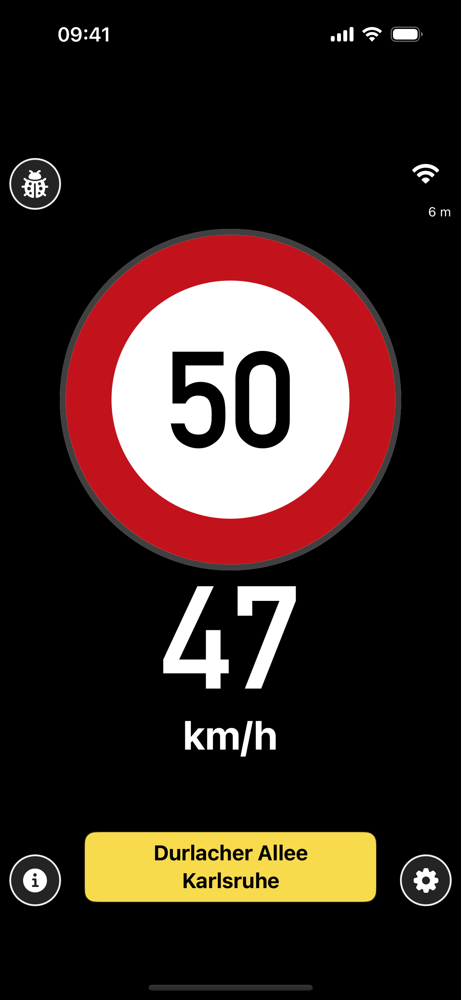
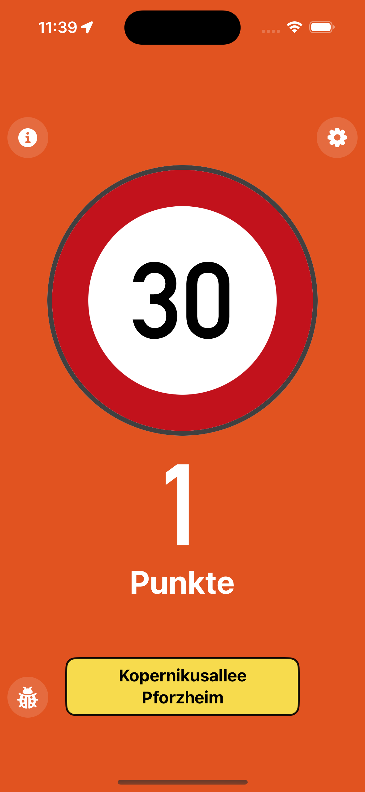

Support · App version 1.0
Wir helfen dir weiter.
Antworten zur App, zu Berechtigungen und zum Offline-Betrieb – oder direkter Kontakt mit unserem Team.

Direkter Kontakt
Support für YouSpeed
Beschreibe bitte dein Gerät, deine iOS- oder Android-Version und was du unmittelbar vor dem Problem getan hast. Screenshots helfen uns bei der Diagnose.
studios@moonshots.gmbhAntwort üblicherweise innerhalb von 2 Werktagen · Deutsch oder Englisch
App-Demo
YouSpeed in Fahrt
Die Demo zeigt YouSpeed auf einem echten iPhone: Standortfreigabe, lokale Kartendaten, Live-Anzeige, Warnstufen, Einstellungen und lokale Korrekturen.

Häufige Fragen
Schnelle Hilfe
Warum benötigt YouSpeed meinen Standort?
Die App nutzt deinen Standort während der Verwendung, um aktuelle Geschwindigkeit und das passende Tempolimit aus den lokal gespeicherten Kartendaten zu bestimmen. YouSpeed verkauft keine Standortdaten und verwendet kein Werbetracking.
Funktioniert YouSpeed ohne Internet?
Ja. Nach dem Herunterladen der Kartendaten funktioniert die Anzeige während der Fahrt offline. Eine Internetverbindung wird nur benötigt, um Kartendaten und Tempolimits zu laden oder zu aktualisieren.
Warum fragt die App nach Mikrofon und Spracherkennung?
Diese Berechtigungen werden nur für die optionale Erfassung einer lokalen Tempolimit-Korrektur benötigt. Doppeltippe auf das große Verkehrsschild und sprich die korrekte Zahl. Die Erfassung wird lokal gespeichert und kann in der App angesehen, exportiert oder gelöscht werden.
Das Tempolimit oder die Position stimmt nicht.
GPS-Empfang, parallele Straßen, Tunnel oder veraltete OpenStreetMap-Daten können die Zuordnung beeinflussen. Beachte immer die echten Verkehrszeichen. Du kannst eine Korrektur per Doppeltipp auf das Verkehrsschild lokal erfassen oder uns Ort, Straße und Fahrtrichtung per E-Mail senden.
Wie aktualisiere ich die Kartendaten?
Öffne unten rechts die Einstellungen. Dort siehst du verfügbare Regionen und kannst ein Datenpaket laden oder aktualisieren. Lass die App bis zum Abschluss geöffnet und verwende möglichst WLAN.
Wie kann ich gespeicherte Daten löschen?
Lokale Korrekturen findest du über das Symbol oben links und kannst sie einzeln oder vollständig löschen. Heruntergeladene Kartendaten lassen sich in den Einstellungen entfernen. Der mitgelieferte Startdatensatz bleibt erhalten.
English support
Need help with YouSpeed?
Email studios@moonshots.gmbh with your device model, OS version, and a short description of the issue. YouSpeed uses location while the app is in use to match your speed with locally stored map data. Microphone and speech recognition access are optional and requested only when you capture a local speed-limit correction.